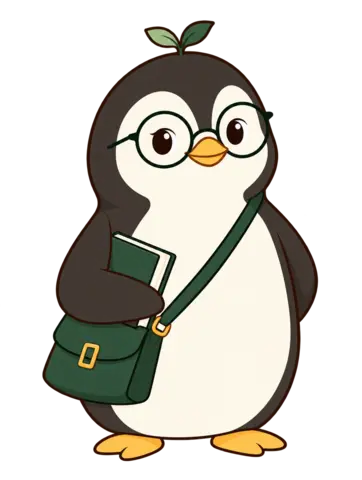
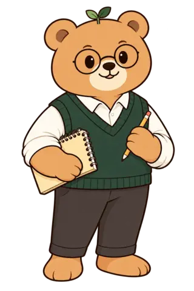

🎉 새로운 카드를 뽑을 수 있어요!
탭해서 뽑기

문장을 주어(S) · 동사(V) · 목적어(O) · 보어(C) · 수식어(M) 덩어리로 나누어 보고, 직접 표시하며 연습해요
여러 문장으로 된 지문을 붙여넣거나 .txt 파일을 올리면 문장 단위로 자동으로 나눠드려요. 나뉜 문장은 지문 이름(폴더)별로 아래 "내가 추가한 문장" 목록에 모이고, 각 문장을 열어 청크(S/V/O/C/M)를 지정해주면 학습·연습·인쇄에 바로 쓸 수 있어요. 문장 나누기만 자동이고, 정확한 청크 지정은 직접 해주셔야 해요.

문장을 원하는 청크 단위로 / 로 구분해서 입력하면, 각 청크에 태그(S/V/O/C/M)를 지정할 수 있어요.
예: She / gave / me / a nice present.
문장을 10개 연습할 때마다 곰이 다음 지점으로 이동해요. 10개 지점을 모두 지나 도시에 도착하면 그 도시를 정복할 수 있어요. 도시를 정복하면 다음 세계로 떠나요!
문장을 20개 연습할 때마다 새로운 카드를 뽑아요. 같은 세계의 카드를 5장 모두 모으면 그 세계를 완전히 정복한 거예요!
꾸준히 연습하면 피규어와 메달을 모을 수 있어요. 조건을 채우면 자동으로 잠금이 풀려요!
선택한 난이도의 문장으로 오프라인 학습지를 만들어요. 화면에서 미리보기를 만든 뒤 인쇄 버튼을 누르면 돼요.